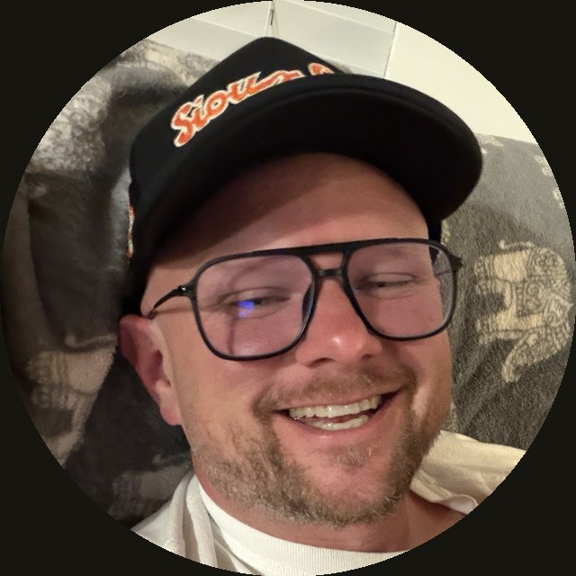

About
Led by someone who has been there.
Golden Key Recovery is a residential addiction treatment program in Troy, Missouri.

Timothy “Moose” Kavanagh
Clinical Director
14 years sober. Thousands of men mentored. He has lived the road he now leads people down.
Moose has worked in recovery since 2013. He started an addiction recovery community center in St. Charles, ran sober living homes for a decade, and has counseled and mentored thousands of men through addiction. He built Golden Key to be the program he would want for his own family.
- Certified Reciprocal Alcohol and Drug Counselor (CRADC)
- Credentialed clinical supervisor
- Founder of a recovery community center in St. Charles
- Mentor to thousands of men in recovery